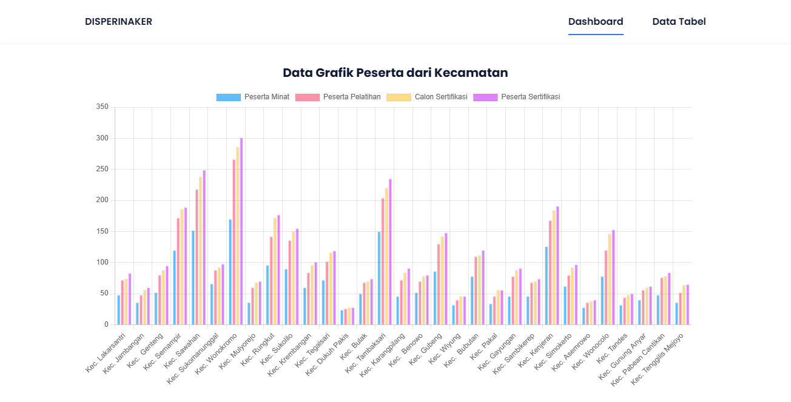
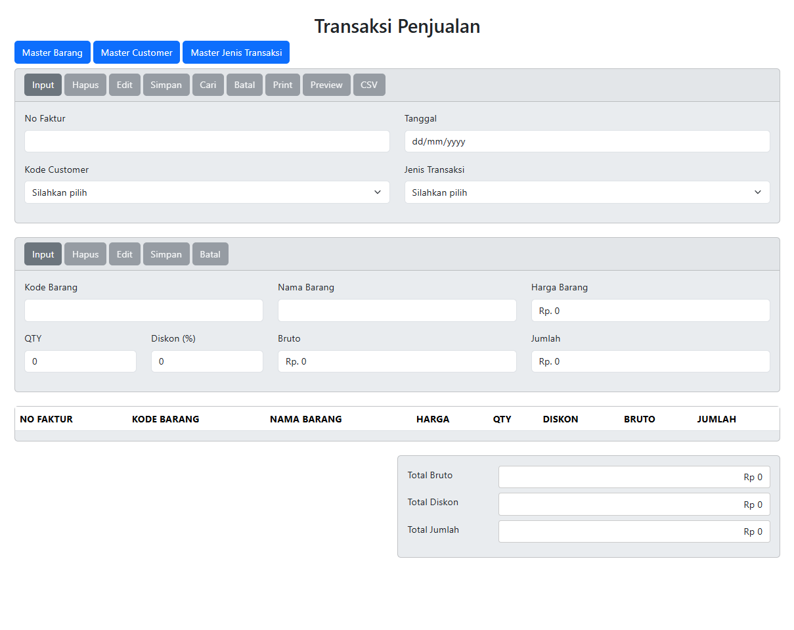
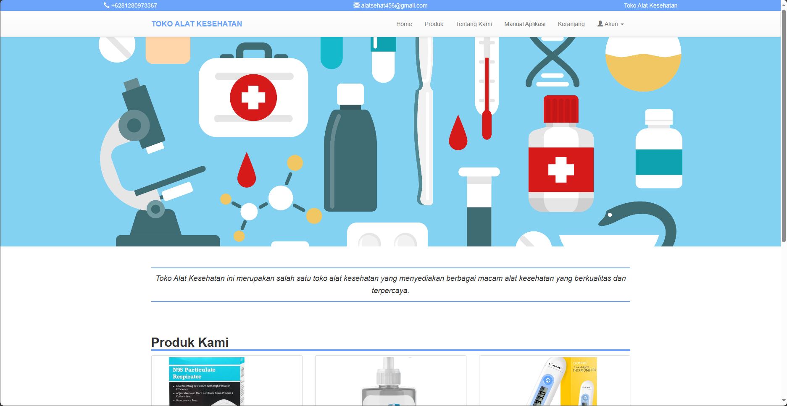
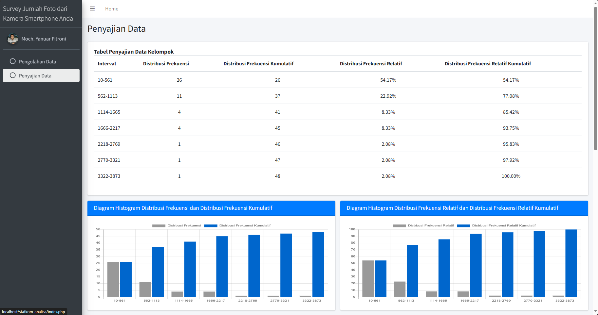
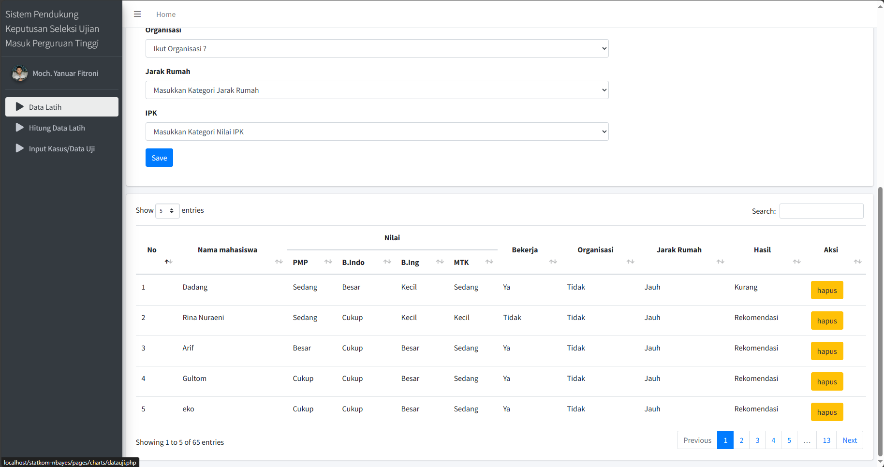

Proyek yang pernah dikerjakan
Campuran proyek web, game, dan backend API — hasil kuliah, magang, dan eksplorasi pribadi.


Sistem Informasi Disperinaker Kota Surabaya
Prototipe dashboard untuk edukasi penggunaan dan manajemen data Disperinaker Kota Surabaya.

Web Transaksi Penjualan
Prototipe aplikasi kasir / POS (Point of Sales) untuk transaksi penjualan.


Web Toko Alat Kesehatan
Website informasi toko alat kesehatan, dibangun dengan PHP Native dan Bootstrap.

Terjemahkan Aksara Sunda | API
Backend API untuk aplikasi penerjemah aksara Sunda, dibangun dengan Node.js dan Firebase, di-deploy di Google Cloud.

Statistika Komputasi
Website sederhana untuk menghitung mean, median, modus, varians, dan standar deviasi dari data galeri foto.

Seleksi Ujian Masuk Mahasiswa dengan Naive Bayes
Sistem pendukung keputusan sederhana menggunakan algoritma Naive Bayes untuk seleksi ujian masuk mahasiswa baru.

Web Profile
Website pribadi yang menampilkan profil diri, dibangun dengan HTML, CSS, dan Bootstrap.

Bookshelf API
Back-end dasar dibangun dengan Node.js, dibuat untuk memenuhi submission kelas Dicoding.